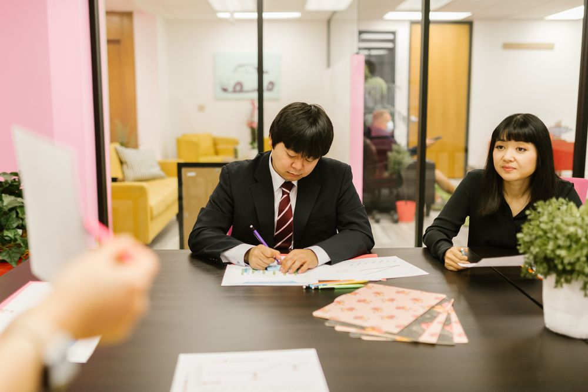

人材サービスHR Solutions
外国人社員の受け入れ・育成から、専属の開発チームまで。みらいコンサルティンググループの一員として、日本企業の人材課題をワンストップで支援します。From welcoming and training foreign staff to a dedicated development team. As part of Mirai Consulting Group, we help Japanese companies with their people, all in one place.
こんなお悩みはありませんかChallenges we hear from companies
外国人社員の日本語に不安があるForeign staff struggle with Japanese
現場でのコミュニケーションや報連相がうまくいかない。Day-to-day communication and reporting do not go smoothly.
受け入れ体制づくりがわからないUnsure how to set up onboarding
手続きや労務管理、定着のための仕組みづくりに手が回らない。Paperwork, labour management and retention take more time than you have.
開発人材が足りないNot enough developers
エンジニアの採用が難しく、開発・保守が思うように進まない。Hiring engineers is hard, and development and maintenance fall behind.
OPearlが選ばれる3つの理由3 reasons companies choose OPearl
みらいグループの信頼と、教育事業のノウハウ。だから、採用後まで任せられます。The trust of Mirai Group and the know-how of an education business, so you can rely on us beyond day one.
みらいグループのワンストップ支援One-stop support from Mirai Group
会計・税務・労務の専門家を擁するみらいコンサルティンググループと連携。外国人社員の受け入れに伴う手続きや労務管理まで、まとめてご相談いただけます。We work with Mirai Consulting Group's accounting, tax and labour specialists, so you can bring every question about welcoming foreign staff, including paperwork and labour management, to one place.
- グループ顧客企業10,000社以上Group serves 10,000+ client companies
- 全国30以上の都道府県に拠点Offices in 30+ prefectures
教育事業を持つからこその育成力Training expertise from our own school
オンラインスクール「OPearlアカデミー」のノウハウを活かし、外国人社員の日本語力とビジネスマナーを、実務に合わせて伸ばします。We use what we have built at OPearl Academy to develop your foreign staff's Japanese and business manners, shaped around their actual work.
- 職種・レベルに合わせたカリキュラムCurriculum matched to role and level
- オンラインで就業時間に合わせて受講Online, scheduled around work

日本語で、安心のやり取りEverything in Japanese, with peace of mind
契約・窓口は日本のOPearl。オフショア開発でも、要件定義から品質管理まで日本語で進められます。OPearl in Japan is your contract partner and point of contact. Even offshore development runs in Japanese, from requirements to quality control.
- 日本側の担当者が窓口A contact person in Japan
- 定期的なレポートで進捗を見える化Regular reports so you can see progress
ご利用の流れHow it works
お問い合わせから開始まで、担当者が日本語で丁寧にご案内します。From first message to kickoff, a contact person guides you in Japanese.
- STEP 01
お問い合わせContact us
フォームまたはメールでご連絡ください。担当者よりご連絡します。Send us a message by form or email and we will get back to you.
- STEP 02
ヒアリングConsultation
外国人社員の受け入れ状況、研修のご要望、開発内容などをうかがいます。We learn about your foreign staff, training needs or development project.
- STEP 03
ご提案・お見積りProposal & quote
研修プランやチーム体制をご提案し、お見積りをお出しします。We propose a training plan or team setup and send a quote.
- STEP 04
ご契約Agreement
契約・やり取りはすべて日本語で。窓口は日本のOPearlです。Contracts and communication are in Japanese, with OPearl in Japan as your contact.
- STEP 05
開始・継続サポートStart & ongoing support
研修・開発を開始。定期的な報告と改善で、成果につなげます。Training or development begins, with regular reports and improvements.

ご相談だけでも歓迎ですJust want to talk it through?
まずは現状のお悩みをお聞かせください。Tell us what you are facing and we will take it from there.
サービス内容What we offer
受け入れ相談Onboarding advice
外国人社員の受け入れに必要な準備や体制づくりをご相談いただけます。Advice on preparing for and setting up to welcome foreign staff.
日本語・マナー研修Language & manners training
OPearlアカデミーによる、外国人社員向けの日本語・日本文化・ビジネスマナー研修。Japanese language, culture and business-manners training for foreign staff, through OPearl Academy.
オフショアITチームOffshore IT team
貴社専属の開発チームが、開発・保守を担います。A development team dedicated to you, for building and maintaining software.
定着・労務支援Retention & labour support
みらいグループの労務サービスと連携し、長く活躍できる環境づくりを支援。With Mirai Group's labour services, we help create a workplace where staff stay and thrive.
私たちのオフィスは、
貴社のオフィス。Our office is your office.
人材サービスの一つとして、貴社専属の開発チームをご提供します。契約・窓口は日本のOPearl。日本語で安心してご依頼いただけます。As part of our HR Solutions, we provide a development team dedicated to your company. OPearl in Japan holds the contract and is your contact, so you can work with us in Japanese.
- 受託開発（Web・モバイルアプリ）Custom software, web and mobile apps
- ラボ型の専属チーム。月単位で規模を調整Dedicated lab-type teams, adjustable month to month
- ブリッジSEが要件と品質を管理A bridge engineer manages requirements and quality
- システム保守・QA・テストMaintenance, QA and testing
このサービスについて問い合わせるContact us about this service
外国人社員の研修・受け入れ、オフショア開発について、お気軽にご相談ください。Ask us about training or welcoming foreign staff, or about offshore development.